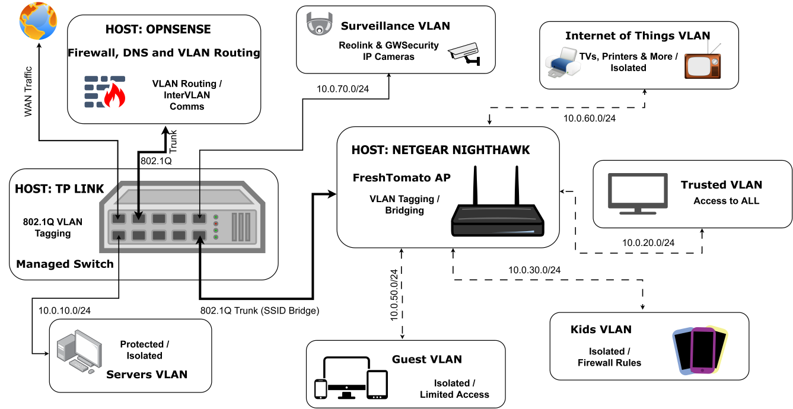

System Integration Topology
Segmented enterprise topology featuring an OPNsense firewall host managing multi-VLAN routing over an 802.1Q trunk line connected to a managed switch and a FreshTomato wireless access point.

Network Segmentation & Subnet Breakdown
Network traffic is logically partitioned into dedicated IEEE 802.1Q VLANs enforced via OPNsense firewall rules to prevent unauthorized lateral movement.
- Servers VLAN (10.0.10.0/24): Protected and isolated subnet dedicated to host hypervisors and core infrastructure services.
- Trusted VLAN (10.0.20.0/24): Administrative workstation segment with full inter-VLAN access to manage all subnets and host interfaces.
- Kids VLAN (10.0.30.0/24): Restricted subnet with strict firewall schedules, Unbound DNS filtering, and limited outbound access.
- Guest VLAN (10.0.50.0/24): Isolated wireless segment providing internet access while blocking all internal LAN and subnet communications.
- Internet of Things VLAN (10.0.60.0/24): Isolated subnet for smart TVs, printers, and IoT devices, preventing compromised hardware from reaching core subnets.
- Surveillance VLAN (10.0.70.0/24): Dedicated IP camera network (Reolink & GWSecurity) isolated from WAN egress and routed directly to NVR.
Infrastructure & Engineering Highlights
OPNsense Router-on-a-Stick
Utilizes a single physical interface connected via an 802.1Q trunk port to a TP-Link managed switch, efficiently routing and filtering inter-VLAN traffic at line rate.
FreshTomato Wireless Bridging
Flashed custom open-source FreshTomato firmware onto a Netgear Nighthawk router to act as a multi-SSID wireless access point, tagging wireless traffic directly to respective VLAN IDs.
Strict InterVLAN Firewall Policies
Configured stateful firewall rules in OPNsense to enforce zero-trust posture, allowing default outbound internet access while denying cross-subnet communication except for explicit administrative overrides.